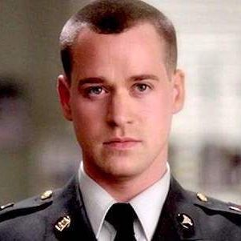

HOME
ALIEN ESCAPE
HANGMAN
GREY'S ANATOMY KNOWLEDGE QUIZ
Warning: Spoilers if you have not seen up to season six.
Season Three: What was the name of the college professer Cristina had a relationship with?
Theodore Wright
Colin Marlow
Silas King
Season One: What did Derek say to Meredith right before Addison introduces herself?
Meredith, pick me, choose me, love me."
"Meredith, remember I love you."
"Meredith, I am so sorry."
Season Five: What grade did Lexie skip?
Fifth Grade
Third Grade
Tenth Grade

Season Five: How does Meredith figure out George is John Doe?
He blinks his name in morse code.
He traces "007" in Meredith's hand.
None of the above.
Season Six: What age did Mark get chicken pox?
6
7
8
Score: 0/5
Made by Serenity Harris